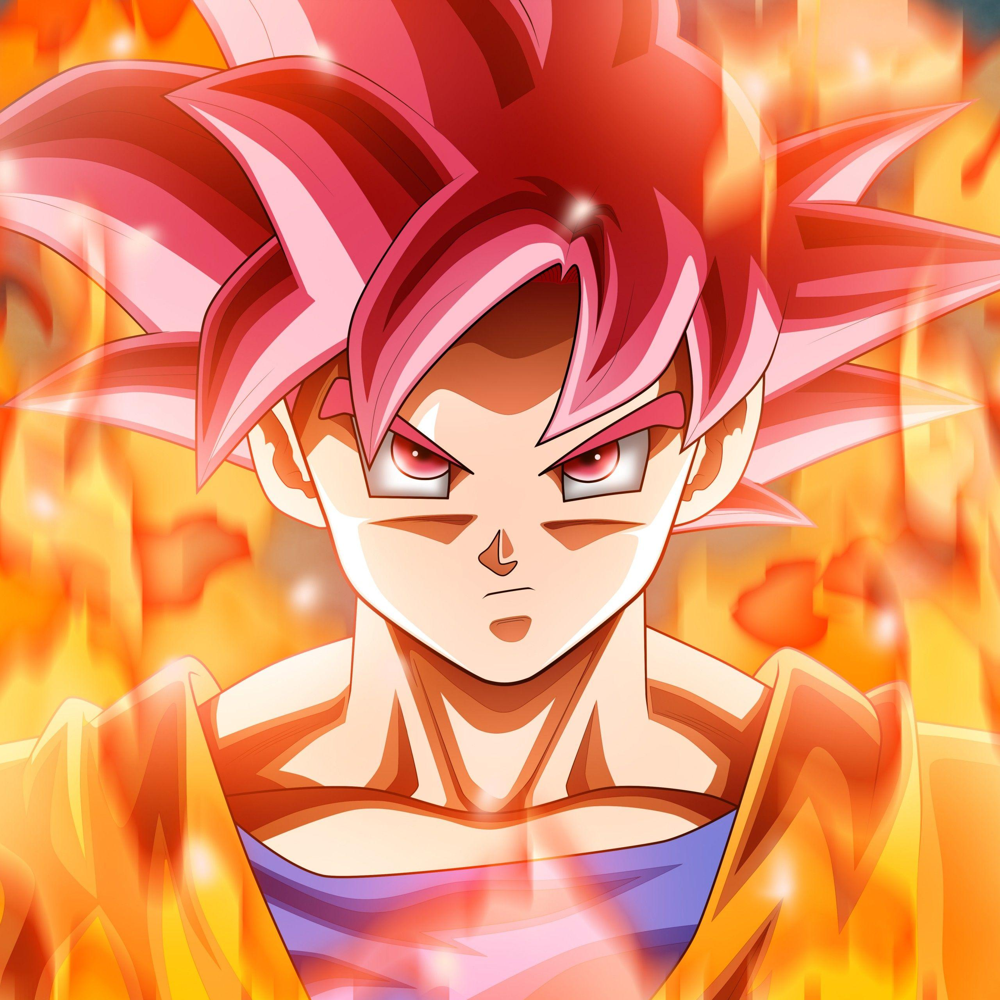
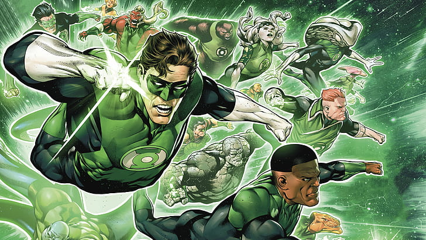

<div #videoContainer class="video-container" [attr.data-volume-level]="volumeLevel" [ngClass]="{'paused': paused, 'full-screen': fullScreenMode, 'theater': theaterMode, 'mini-player-button': miniMode, 'scrubbing': isScrubbing}">
    <div class="video-controls-container">
        <!---->
        <div #timelineContainer class="timeline-container"
            (mousedown)="startScrubbing($event)"
            (mouseup)="stopScrubbing($event)"
            (mousemove)="handleTimelineUpdate($event)">  
            <div class="timeline">
                
                <div class="thumb-indicator"></div>
            </div>
        </div>
        <div class="controls">
            <button class="play-pause-button" (click)="togglePlay()">
                <svg class="play-icon" viewBox="0 0 24 24">
                    <path fill="currentColor" d="M8,5.14V19.14L19,12.14L8,5.14Z" />
                </svg>
                <svg class="pause-icon" viewBox="0 0 24 24">
                    <path fill="currentColor" d="M14,19H18V5H14M6,19H10V5H6V19Z" />
                </svg>
            </button>
            <div class="volume-container">
                <button class="mute-button" (click)="toggleMute()">
                    <svg class="volume-high-icon" viewBox="0 0 24 24">
                        <path fill="currentColor" d="M14,3.23V5.29C16.89,6.15 19,8.83 19,12C19,15.17 16.89,17.84 14,18.7V20.77C18,19.86 21,16.28 21,12C21,7.72 18,4.14 14,3.23M16.5,12C16.5,10.23 15.5,8.71 14,7.97V16C15.5,15.29 16.5,13.76 16.5,12M3,9V15H7L12,20V4L7,9H3Z" />
                    </svg>
                    <svg class="volume-low-icon" viewBox="0 0 24 24">
                        <path fill="currentColor" d="M5,9V15H9L14,20V4L9,9M18.5,12C18.5,10.23 17.5,8.71 16,7.97V16C17.5,15.29 18.5,13.76 18.5,12Z" />
                    </svg>
                    <svg class="volume-muted-icon" viewBox="0 0 24 24">
                        <path fill="currentColor" d="M12,4L9.91,6.09L12,8.18M4.27,3L3,4.27L7.73,9H3V15H7L12,20V13.27L16.25,17.53C15.58,18.04 14.83,18.46 14,18.7V20.77C15.38,20.45 16.63,19.82 17.68,18.96L19.73,21L21,19.73L12,10.73M19,12C19,12.94 18.8,13.82 18.46,14.64L19.97,16.15C20.62,14.91 21,13.5 21,12C21,7.72 18,4.14 14,3.23V5.29C16.89,6.15 19,8.83 19,12M16.5,12C16.5,10.23 15.5,8.71 14,7.97V10.18L16.45,12.63C16.5,12.43 16.5,12.21 16.5,12Z" />
                    </svg>
                </button>
                <input #volumeSlider class="volume-slider" type="range" min="0" max="1" step="any" value="1" (change)="onVolumeChange($event)">
            </div>
            <div class="duration-container">
                <div class="current-time">{{videoCurrentTime}} /</div>
                <div class="total-time">{{videoDuration}}</div>
            </div>
            <div class="switch">
                <app-switch></app-switch>
            </div>
            <div class="captions-container" [ngClass]="{'captions': captions}">
                {{playbackRate}}x
                <button (click)="toggleCaptions()" class="closed-caption-button">
                    <span class="material-symbols-outlined">closed_caption</span>
                    <!--<svg viewBox="0 0 24 24">
                        <path fill="currentColor" d="M18,11H16.5V10.5H14.5V13.5H16.5V13H18V14A1,1 0 0,1 17,15H14A1,1 0 0,1 13,14V10A1,1 0 0,1 14,9H17A1,1 0 0,1 18,10M11,11H9.5V10.5H7.5V13.5H9.5V13H11V14A1,1 0 0,1 10,15H7A1,1 0 0,1 6,14V10A1,1 0 0,1 7,9H10A1,1 0 0,1 11,10M19,4H5C3.89,4 3,4.89 3,6V18A2,2 0 0,0 5,20H19A2,2 0 0,0 21,18V6C21,4.89 20.1,4 19,4Z" />
                    </svg>-->
                </button>
            </div>
            <button (click)="changePlaybackSpeed()" class="speed-button wide">
                <!--<app-standard-dropdown [circle]="true"></app-standard-dropdown>-->
                <span class="material-symbols-outlined">Settings</span>
            </button>
            <button (click)="toggleMiniMode()" class="mini-player-button">
                <svg viewBox="0 0 24 24">
                    <path fill="currentColor" d="M21 3H3c-1.1 0-2 .9-2 2v14c0 1.1.9 2 2 2h18c1.1 0 2-.9 2-2V5c0-1.1-.9-2-2-2zm0 16H3V5h18v14zm-10-7h9v6h-9z"/>
                </svg>
            </button>
            <button (click)="toggleTheaterMode()" class="theater-button">
                <svg class="tall-icon" viewBox="0 0 24 24">
                    <path fill="currentColor" d="M19 6H5c-1.1 0-2 .9-2 2v8c0 1.1.9 2 2 2h14c1.1 0 2-.9 2-2V8c0-1.1-.9-2-2-2zm0 10H5V8h14v8z"/>
                </svg>
                <svg class="wide-icon" viewBox="0 0 24 24">
                    <path fill="currentColor" d="M19 7H5c-1.1 0-2 .9-2 2v6c0 1.1.9 2 2 2h14c1.1 0 2-.9 2-2V9c0-1.1-.9-2-2-2zm0 8H5V9h14v6z"/>
                </svg>
            </button>
            <button (click)="toggleFullScreenMode()" class="full-screen-button">
                <svg class="open-full-screen-icon" viewBox="0 0 24 24">
                    <path fill="currentColor" d="M7 14H5v5h5v-2H7v-3zm-2-4h2V7h3V5H5v5zm12 7h-3v2h5v-5h-2v3zM14 5v2h3v3h2V5h-5z"/>
                </svg>
                <svg class="close-full-screen-icon" viewBox="0 0 24 24">
                    <path fill="currentColor" d="M5 16h3v3h2v-5H5v2zm3-8H5v2h5V5H8v3zm6 11h2v-3h3v-2h-5v5zm2-11V5h-2v5h5V8h-3z"/>
                </svg>
            </button>
        </div>
    </div>
    <!--(volumechange)="onVolumeChanged()"-->
    <video #video [ngStyle]="{'width': theaterMode? '90%': '100%', 'object-fit': 'cover'}" alt="" 
        (click)="togglePlay()" 
        (change)="videoVolumeChange($event)"
        (loadedmetadata)="onLoadedMetadata()"
        (timeupdate)="timeUpdated(video)">
        <source src="../../../assets/test-videos/Y2Mate.is - Gran Turismo 5 Opening Montage-6Z1TL_VEEQo-720p-1654232433855.mp4">
        <track kind="captions" srclang="en" src="">
    </video>
</div>